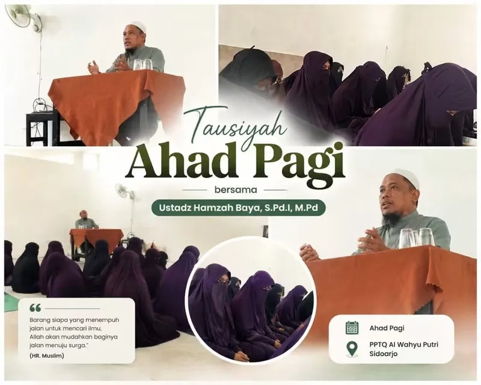

Membangun Generasi Robbani

Kejayaan Islam memang sangatlah sulit diwujudkan di tengah-tengah alam penuh kezhaliman saat ini. Kenyataan ini masih nan jauh di sana. Oleh karenanya, jalan dakwah ini masih sangatlah panjang. Namun, dengan bekal iman dan semangat iqomatuddin yang kuat serta memulai untuk memperbaiki diri sendiri, keluarga dan masyarakat serta mencoba untuk memulai berkarya meski dari hal-hal yang terkecil, tidak mustahil kemuliaan Islam akan diraih.
Allah Ta'ala berfirman:
وَلْيَخْشَ الَّذِينَ لَوْ تَرَكُوا مِنْ خَلْفِهِمْ ذُرِّيَّةً ضِعَافًا خَافُوا عَلَيْهِمْ فَلْيَتَّقُوا اللَّهَ وَلْيَقُولُوا قَوْلًا سَدِيدًا
“Dan hendaklah orang-orang takut kepada Allah, bila seandainya mereka meninggalkan anak-anaknya, yang dalam keadaan lemah, yang mereka khawatirkan terhadap (kesejahteraan) mereka. Oleh sebab itu, hendaklah mereka bertakwa kepada Allah dan mengucapkan perkataan yang benar”. (Q.S An-Nisa’: 9)
Rasulullah bersabda:
لَا تَكُونُوا إِمَّعَةً ، تَقُولُونَ : إِنْ أَحْسَنَ النَّاسُ أَحْسَنَّا ، وَإِنْ ظَلَمُوا ظَلَمْنَا ، وَلَكِنْ وَطِّنُوا أَنْفُسَكُمْ ، إِنْ أَحْسَنَ النَّاسُ أَنْ تُحْسِنُوا ، وَإِنْ أَسَاءُوا فَلَا تَظْلِمُوا
“Janganlah salah satu di antara kamu sekalian berimma’ah, yang jika orang lain baik maka engkau baik, dan jika mereka jelek maka engkau ikut jelek pula. Akan tetapi hendaklah engkau tetap konsisten terhadap (keputusan dirimu. Jika orang-orang baik, maka engkau juga baik; dan jika mereka jelek, hendaklah engkau menjauhinya keburukan mereka.” (HR Tirmidzi)
Di sinilah dicari pemuda Kahfi yang berjuang demi kebenaran hakiki. Mereka adalah generasi rabbani yang siap menjadi pemimpin umat. Diantara pribadi dan kriteriah mereka adalah:
Pertama, Shihhatul Ittijah (Orientasi yang Benar)
“Barang siapa mengharap pertemuan dengan Tuhannya maka hendaklah dia mengerjakan kebajikan dan janganlah dia mempersekutukan dengan sesuatu pun dalam beribadah kepada Tuhannya.” (Qs. al-Kahfi: 110)
Kedua, Shihhatur Risalah (Tugas yang Benar)
“Tidaklah Aku ciptakan jin dan manusia, melainkan hanya untuk beribadah kepada Ku”. (Qs. adz-Dzariyat: 56)
“Sesungguhnya Aku akan jadikan (manusia) sebagai khalifah.” (Qs. al-Baqarah: 30)
Ketiga, Shihhatut Takhtith (Strategi yang Jitu)
“Dan Dialah Allah yang telah menurunkan di kalangan kaum ummiy (buta huruf) seorang Rasul dari kalangan mereka (manusia). Dia membacakan ayat-ayat Allah, membersihkan mereka (dari dosa) dan mengajarkan al-Quran dan Sunnah.” (Qs. al-Jumu’ah: 2)
Keempat, Shihhatul Baramij (Desain amal yang Terarah)
Dalam pembinaan nilai-nilai keislaman tersebut dibutuhkan program atau target-target yang jelas dan terarah. Program yang sangat penting untuk penjagaan diri seorang pemuda dalam aspek ruhiyah, jasadiyah dan fikriyah.
Kelima, Quwwatul Intaj (Produktivitas yang Tinggi) meliputi:
- Berkepribadian Islam (Syakhsiyah Islamiyah)
- Memiliki rasa tanggungjawab dan kepemimpinan, memperjuangkan tegaknya syariah Islam hingga menyinari seluruh alam, menjadi teladan dan mengajak umat manusia untuk mengambil jalan Islam.
Semoga terlahir generasi yang terdiri dari para pemuda yang tangguh memiliki ruhul jihad yang siap berkorban untuk meninggikan agamanya dan hanya mengabdikan dirinya kepada Allah sang maha pencipta, mereka hanya memiliki dua pilihan dalam hidupnya yaitu Isy kariman au mut syahidan (hidup mulia atau mati syahid). Wallahua'lam
Sumber: Buku “Generasi Pemuda dan Perubahan” Fathi Yakan